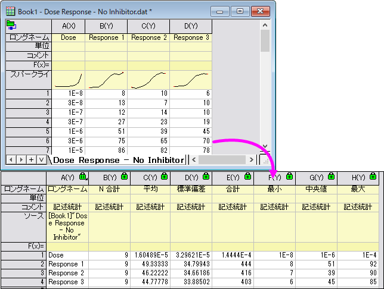
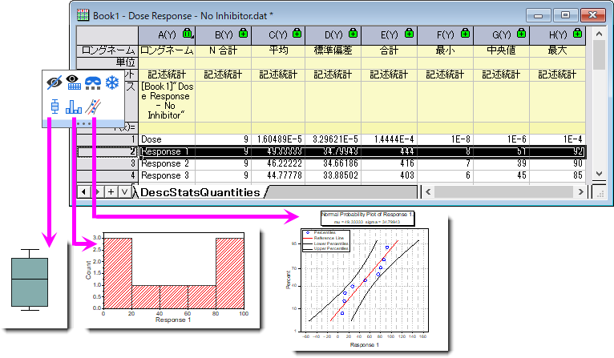

シート全体の統計
Statistics-on-Whole-Sheet
はじめに
Originには入力ワークシートの全ての列に対して記述統計を実行し、結果概要シートを簡単に素早く出力できるツールがあります。サンプル数や合計、平均、SD、最大値、最小値といった基本的な記述統計量を計算できます。
- 
平均値や分位数、グループ化や重みなどの統計量が必要な場合には列の統計を利用してください。
欠損値の扱い
データ範囲内の欠損値は、分析から除外されます。
シート全体の統計の実行
シート全体の記述統計を計算する手順
- 統計：記述統計：シート全体の統計を選択します。 これにより、シート全体の統計ダイアログボックスが開きます。
- 入力ワークシートで分析したいワークシートを指定し、値リストボックスで計算したい記述統計量を選択します。
- 必要に応じて、概要レポートシートでソース列を識別するためにデータセット識別子のリストボックスで1つまたは複数のアイテムを指定します。
- OKをクリックすると、レポートテーブルシートDescStatsQuantitiesが生成されシートにあるすべての列に対する指定した統計値が表示されます。
統計グラフの作成
レポートシートDescStatsQuantitiesから直接ボックスチャートやヒストグラム、確率プロットを作成できます。
- ワークシートDescStatsQuantitiesの1行を選択するとミニツールバーが表示されます。
- 2段目の任意のボタンを選択することでソースデータセットからグラフを作成できます。
 ボタンをクリックしてソースデータセットからボックスチャートを作成します。例えば、次の画像で2行目を選択してグラフを作成する場合、ソースワークシートDose Response - No Inhibitorのcol("Response 1")がボックスチャートの作成に使用されます。
ボタンをクリックしてソースデータセットからボックスチャートを作成します。例えば、次の画像で2行目を選択してグラフを作成する場合、ソースワークシートDose Response - No Inhibitorのcol("Response 1")がボックスチャートの作成に使用されます。- ボタンをクリックしてソースデータセットからヒストグラムを作成します。例えば、2行目を選択するとソースワークシートDose Response - No Inhibitorのcol("Response 1")がヒストグラムの作成に使用されます。
- ボタンをクリックしてソースデータセットから確率プロットを作成します。例えば、2行目を選択するとソースワークシートDose Response - No Inhibitorのcol("Response 1")が確率プロットの作成に使用されます。
- 
 | シート全体の統計で出力され、結果がロックされているDescStatsQuantitiesワークシートはソートする列を選択して右クリックしソート(ワークシート)からソートできます。
|